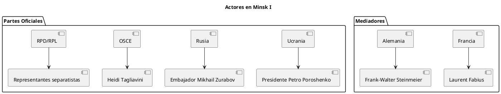
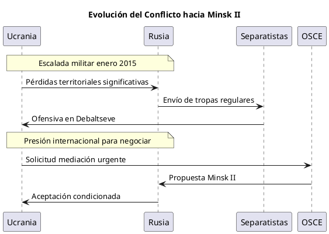
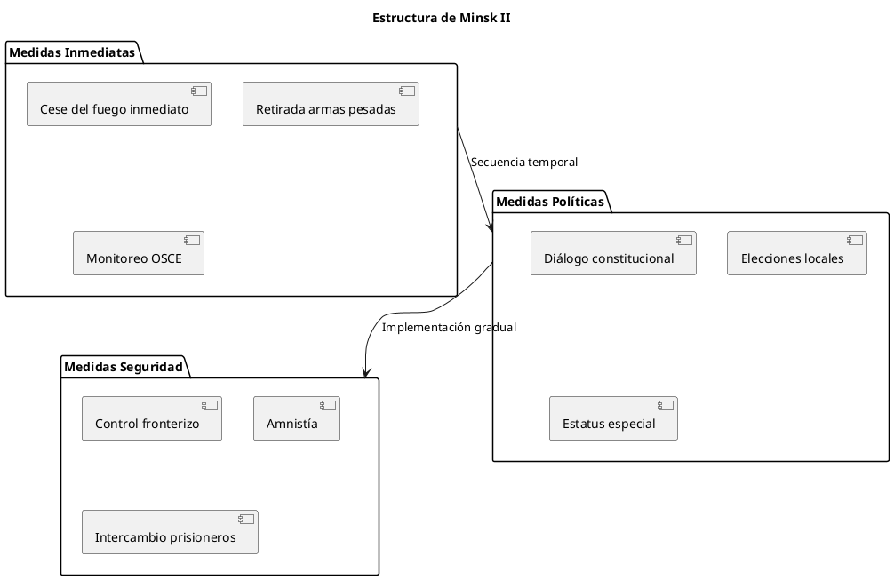
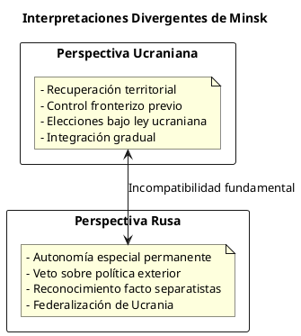
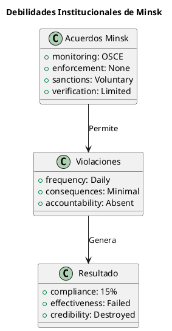
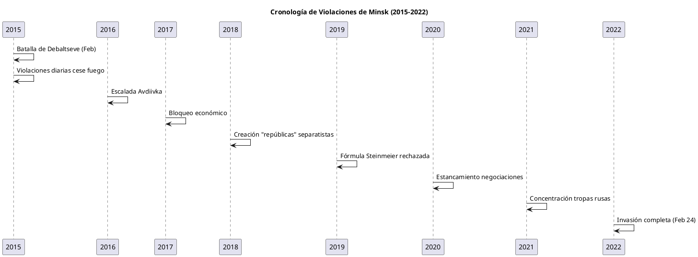
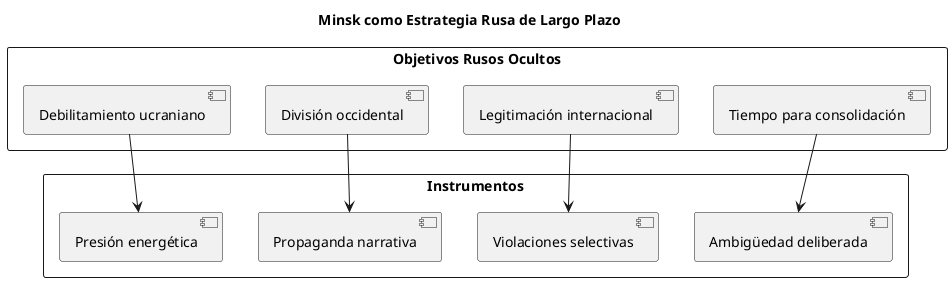
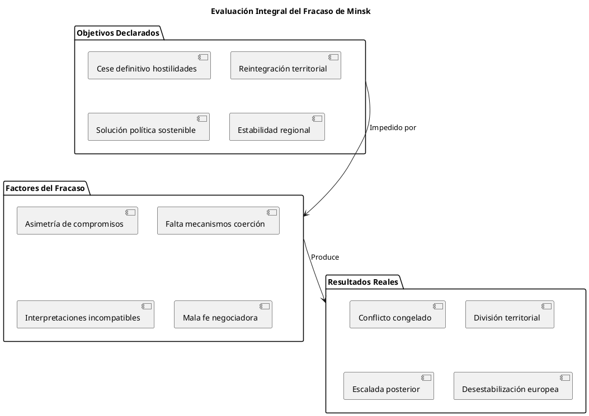
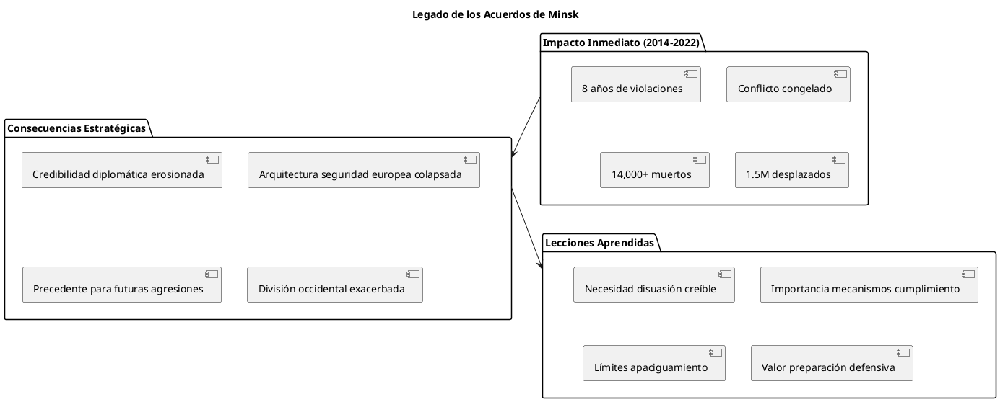

Los Acuerdos de Minsk: Un Análisis Crítico del Fracaso Diplomático ante la Invasión Rusa de Ucrania
Los Acuerdos de Minsk: Un Análisis Crítico del Fracaso Diplomático ante la Invasión Rusa de Ucrania
Los Acuerdos de Minsk representan uno de los fracasos diplomáticos más significativos del siglo XXI. Diseñados para resolver el conflicto iniciado por la invasión rusa de Ucrania en 2014, estos acuerdos no solo fallaron en su objetivo principal, sino que sirvieron como una pausa temporal que permitió a Rusia consolidar sus posiciones y preparar la invasión a gran escala de 2022.
Contexto Histórico
La crisis ucraniana de 2014 marcó el inicio de una nueva fase en las relaciones internacionales postsoviéticas. La anexión de Crimea por parte de Rusia en marzo de 2014 y el posterior apoyo a los separatistas en el Donbás crearon un conflicto "congelado" que requería una solución diplomática urgente.
Objetivos del Documento
Este análisis examina críticamente los Acuerdos de Minsk desde múltiples perspectivas: su formulación, implementación, fallas estructurales y consecuencias a largo plazo para la seguridad europea.
Los Acuerdos de Minsk: Marco Temporal y Protagonistas
Minsk I (Protocolo de Minsk, 5 de septiembre de 2014)
Contexto de la Negociación

El primer acuerdo fue negociado tras intensos combates que habían resultado en significativas pérdidas territoriales ucranianas. Minsk I outlined commitments in three key areas: cessation of hostilities, conflict resolution, and enhanced security measures. It called for a bilateral ceasefire, OSCE monitoring, and the exchange of detainees.
Disposiciones Principales
| Punto | Contenido | Estado de Implementación |
|---|---|---|
| 1 | Cese inmediato del fuego | Violado repetidamente |
| 2 | Retirada de armamento pesado | Parcialmente cumplido |
| 3 | Monitoreo OSCE | Implementado limitadamente |
| 4 | Diálogo sobre estatus especial | No implementado |
| 5 | Liberación de prisioneros | Cumplido parcialmente |
| 6 | Amnistía | No implementada |
| 7 | Intercambio de rehenes | Cumplido parcialmente |
| 8 | Ayuda humanitaria | Implementada con restricciones |
| 9 | Restablecimiento de vínculos sociales | No implementado |
| 10 | Control fronterizo | No implementado |
| 11 | Retirada de grupos armados ilegales | No implementado |
| 12 | Reforma constitucional | Iniciada, no completada |
Fallas Inmediatas
This agreement followed multiple previous attempts to stop the fighting in the region and aimed to implement an immediate ceasefire. The agreement failed to stop fighting. At the start of January 2015, Russia sent another large batch of its regular military.
Minsk II (Paquete de Medidas, 12 de febrero de 2015)
Circunstancias de la Firma

The Minsk 2 peace agreements between Russia and Ukraine, intended to stop the fighting in the Donbas region of Ukraine, were signed in February 2015, when Ukraine was experiencing some of its heaviest losses against Russian-controlled forces. Hundreds of Ukrainian soldiers had been killed
Estructura del Acuerdo

Cronograma de Implementación
The February 2015 agreement stated that Ukraine would start recovering control over its state border on day 1 after the holding of local elections in Donetsk and Luhansk, and that this process would end only after the full implementation of all political provisions.
Análisis Crítico de las Fallas Estructurales
Ambigüedades Interpretativas: El "Conundrum" de Minsk
In general, Moscow and Kyiv interpret the pact very differently, leading to what has been dubbed by some observers as the "Minsk conundrum". Ukraine sees the 2015 agreement as an instrument to re-establish control over the rebel territories. It wants a ceasefire, control of the Russia-Ukraine

Defectos de Diseño
Provisions of the memorandum were too general and vague to determine the actual resolution of the conflict and stabilization of the situation in the eastern Ukraine. The memorandum left its parties free to interpret individual provisions, which ultimately led to escalation of the conflict.
Problemas de Secuenciación
| Fase | Según Ucrania | Según Rusia | Resultado |
|---|---|---|---|
| Fase 1 | Cese del fuego → Control fronterizo | Reformas políticas → Cese del fuego | Deadlock |
| Fase 2 | Elecciones libres → Estatus especial | Estatus especial → Elecciones controladas | Incompatible |
| Fase 3 | Reintegración territorial | Autonomía permanente | Irreconciliable |
Ausencia de Mecanismos de Cumplimiento

La Dinámica de Implementación (2015-2022)
Evolución del Conflicto
The ceasefire agreements signed in September 2014 and February 2015, commonly known as 'Minsk I' and 'Minsk II', remained largely unimplemented throughout the following years, much to the frustration of the agreements' Western backers.
Cronología de Violaciones Principales

Presiones Internacionales
Over the years, observers have argued that Ukraine, under pressure from its international partners and a deteriorating situation on the battlefield, was forced to sign an unfavorable deal in 2014 and an even worse one in 2015.
Perspectiva Geopolítica y Estratégica
Los Acuerdos como Herramienta de Control
several delegates noting that what was once intended to be a blueprint for the 2014 crisis has turned into Moscow's leverage to limit the sovereignty of Ukraine

El Fracaso del Formato Normandía
Actores del Formato Normandía
| Actor | Intereses | Estrategia | Resultado |
|---|---|---|---|
| Francia | Estabilidad europea | Diplomacia de compromiso | Frustración |
| Alemania | Relaciones económicas | Apaciguamiento pragmático | Fracaso |
| Ucrania | Integridad territorial | Resistencia selectiva | Aislamiento |
| Rusia | Influencia regional | Dilación estratégica | Éxito temporal |
Consecuencias y Lecciones
El Colapso Final
Still, Russia has continuously blamed Ukraine for failing to perform the Minsk agreements. In 2022, Russia pronounced that the agreements "no longer existed" and used it as one of the pretexts to launch the full-scale invasion of Ukraine.
And second, that the 2014/2015 Minsk agreements—aimed at restoring peace in the region by ending the separatist war—had long been dead. On this last point, Putin was mostly correct.
Evaluación de Efectividad

Lecciones para la Diplomacia Internacional
The Minsk Agreements show that the signing of a peace pact alone does not ensure a durable end to conflict
### Lecciones Críticas Identificadas
- Necesidad de Mecanismos de Cumplimiento Robustos: Los acuerdos sin consecuencias por violaciones están condenados al fracaso.
- Importancia de la Claridad Jurídica: Las ambigüedades deliberadas no son compromiso diplomático sino recetas para el conflicto.
- Reconocimiento de la Asimetría de Poder: Los acuerdos entre partes con capacidades desiguales requieren garantías compensatorias.
- Límites de la Diplomacia sin Disuasión: La diplomacia pura es insuficiente contra actores que operan con mala fe sistemática.
Análisis Documental y Fuentes
Fuentes Primarias
Documentos Oficiales
- Protocolo de Minsk (5 de septiembre de 2014): Documento original firmado en Minsk
- Memorando de Minsk (19 de septiembre de 2014): Aclaraciones técnicas al protocolo
- Paquete de Medidas para la Implementación de los Acuerdos de Minsk (12 de febrero de 2015): Minsk II
- Resolución 2202 del Consejo de Seguridad de la ONU (17 de febrero de 2015): Respaldo internacional
Informes de Monitoreo
- Informes diarios de la Misión Especial de Monitoreo de la OSCE en Ucrania (2014-2022)
- Reportes del Alto Comisionado de la ONU para los Derechos Humanos sobre Ucrania
- Análisis del Instituto Internacional de Estudios Estratégicos (IISS)
Fuentes Secundarias
Análisis Académicos
- European Council on Foreign Relations: "Ukraine, Russia, and the Minsk agreements: A post-mortem"
- Carnegie Endowment for International Peace: "In the Shadow of the Minsk Agreements"
- Chatham House: "The Minsk Conundrum: Western Policy and Russia's War in Eastern Ukraine"
Perspectivas Periodísticas
- Foreign Policy: "Ukraine and Russia's Minsk Agreement Is a Problematic Peace Plan"
- The Moscow Times: "Explainer: What Are the Minsk Agreements?"
- Kyiv Independent: "What were the Minsk Agreements and why did they fail to bring peace in Ukraine?"
Limitaciones del Análisis Documental
Las fuentes presentan inherentes limitaciones debido a:
- Acceso Restringido: Muchas negociaciones permanecen clasificadas
- Sesgo Nacional: Las fuentes reflejan perspectivas nacionales específicas
- Evolución Interpretativa: Las interpretaciones han cambiado post-invasión 2022
- Información Fragmentada: No existe un archivo completo accesible públicamente
Conclusiones
## Veredicto Final sobre los Acuerdos de Minsk
The so-called Minsk Agreements, a series of ceasefire agreements with a controversial peace settlement road map that was signed in September 2014 and February 2015,3 de-escalated the war in the Donbas but proved insufficient to fully end hostilities and prevent Russia from invading Ukraine in 2022.
Los Acuerdos de Minsk representan un caso paradigmático del fracaso de la diplomacia tradicional europea ante un actor que opera fuera del marco de normas internacionales establecidas. Más que un esfuerzo genuino por la paz, estos acuerdos funcionaron como un mecanismo de legitimación temporal que permitió a Rusia consolidar sus ganancias territoriales mientras preparaba una agresión mayor.
## Implicaciones para la Arquitectura de Seguridad Europea
El colapso de Minsk marca el fin de la era post-Guerra Fría en Europa y señala la necesidad de repensar fundamentalmente los mecanismos de seguridad continental. La confianza en que los acuerdos diplomáticos por sí solos pueden resolver conflictos con potencias revisionistas ha demostrado ser una ilusión peligrosa.
## Relevancia Contemporánea
La experiencia de Minsk ofrece lecciones cruciales para cualquier futura negociación con Rusia u otros actores que operan con lógicas similares. Los errores cometidos entre 2014 y 2022 no deben repetirse en futuras iniciativas diplomáticas.


La historia juzgará los Acuerdos de Minsk no como un esfuerzo noble que falló, sino como una pausa costosa que permitió que una agresión limitada evolucionara hacia una guerra total. Esta conclusión, aunque dura, es esencial para evitar repetir los mismos errores en el futuro inmediato de Europa.
— Documento generado el 20 de agosto de 2025 Basado en análisis de fuentes primarias y secundarias disponibles públicamente